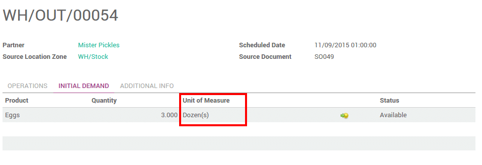

概述
有时候，很有必要使用产品的不同计量单位。例如，你在使用公制单位的国家采购但是却在使用英制单位的国家销售，这时就需要在单位之间转换。
在YuanCloud中你可以设置一个产品可以有不同的计量单位。
配置
在**库存**模块下，进入：[UNKNOWN NODE title_reference]。在 产品**部分，选择**产品的采购/销售时可以使用不同的计量单位(高级)，然后点击**应用**。
给产品设置计量单位
在：[UNKNOWN NODE title_reference],打开你需要在采购/销售过程中使用不同计量单位的产品并点击**编辑**。
在**计量单位**部分，选择产品销售时候的计量单位以及内部调拨时候的计量单位。
在**采购计量单位**部分，选择采购时候的计量单位。完成之后点击**保存**。

小技巧
点击编辑按钮|编辑|创建新的计量单位。
从一种计量单位转换为另外一种
在做计量单位的内部转换时，YuanCloud会自动的四舍五入。
计量单位在全程都可以变换。唯一的条件是这些计量单位都必须是同一类别。
在本示例中，我们用鸡蛋做示例：
通常，我们都是按照一盘为单位购买(一盘30个)
收货的时候是按照单个(质量检验)
在卖给客户的时候是按照一打来卖

注解
[UNKNOWN NODE problematic]销售价格**用**产品的计量单位**表示。[UNKNOWN NODE problematic]成本价格**用**采购计量单位**表示
注解
所有的内部调拨都用**产品计量单位**表示。
补货
在进行补货需求时，你还是可以更改计量单位。

在采购订单中也可以更改计量单位：

质量控制
质检过程按照单个检验
产品的最基本的计量单位是**个**。因此产品数量按个数检查。

注解
只有当调拨单状态是**草稿**状态时，计量单位才能更改。
发货流程
鸡蛋按打销售。你可以在销售订单上选择计量单位。在变换计量单位的时候，单位价格会根据一打的单位价格自动计算。

在发货单中，最初的需求用销售订单中的计量单位完成：
但是调拨使用产品的计量单位已经完成，所有都自动的转换：